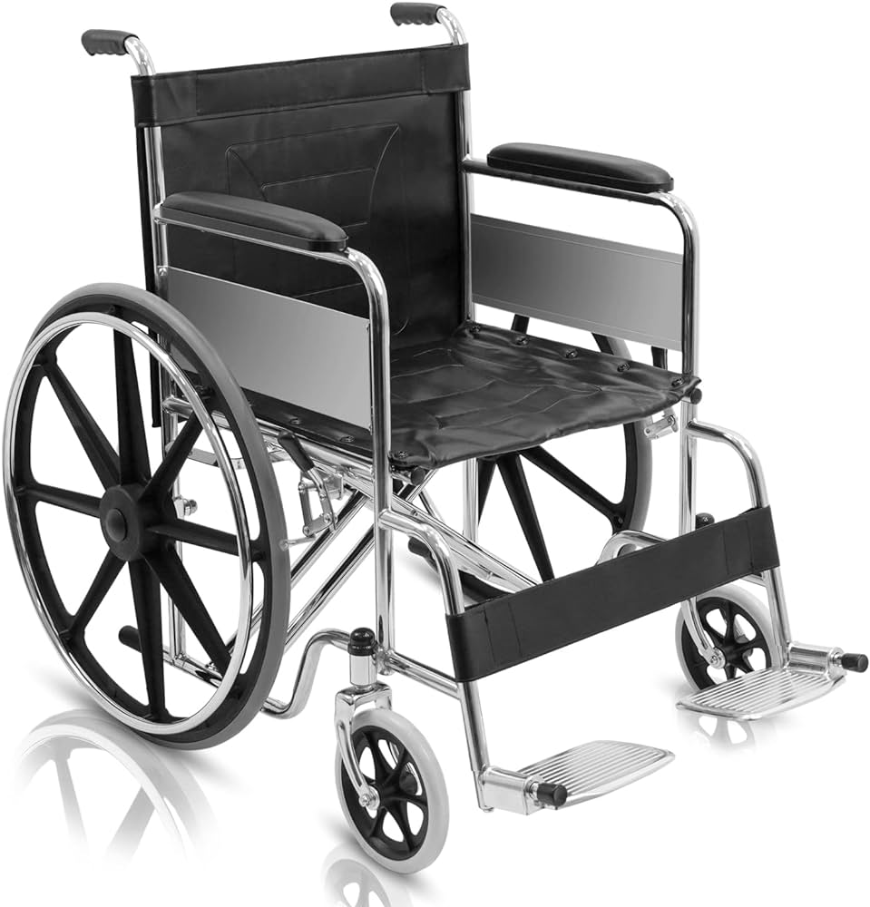

Wheelchair
Comfortable and reliable wheelchairs for hire.

Oxygen Machine
High-quality oxygen concentrators available for rent.

Hospital Bed
Adjustable hospital beds for patient care at home.

Crutches
Lightweight and durable crutches for added mobility.

Nebulizer
Efficient nebulizers for easy breathing treatments.
.floating-box h2 {
color: #004aad;
font-size: 1.6rem;
margin-bottom: 1rem;
}
.floating-box p {
color: #333;
line-height: 1.6;
}
At Divine Care Systems, we are dedicated to providing high-quality medical equipment for hire, making healthcare at home accessible and affordable. From wheelchairs to oxygen concentrators, we ensure that our patients get the right equipment at the right time, enhancing their quality of life.
.background-image {
position: absolute;
top: 0;
left: 0;
width: 100%;
height: 100%;
background: url(hands.avif) no-repeat center center/cover;
z-index: -1;
opacity: 0.7;
}